12DEC
Freshers’ orientation and membership drive
Welcome new students and register them as members. Venue to be confirmed.
The voice of NDC students at the University for Development Studies, Tamale Campus: organising, learning and serving.
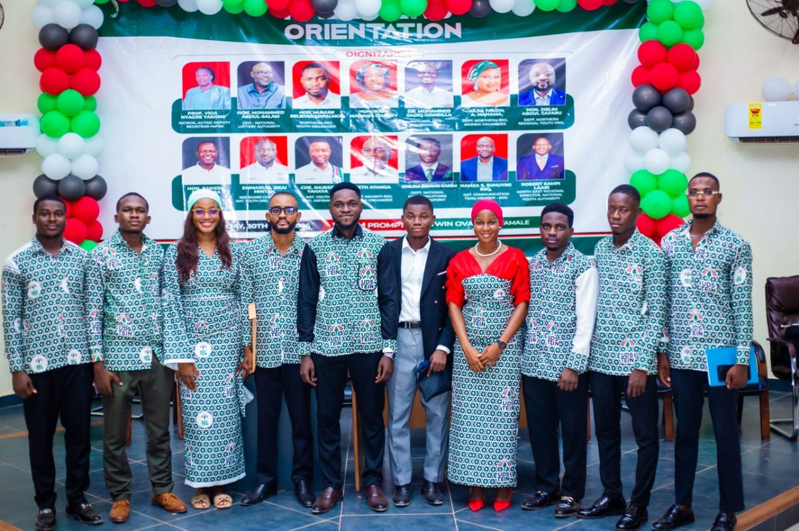
TEIN, the Tertiary Education Institutions Network, is the tertiary students’ wing of the National Democratic Congress. It began at KNUST in 1992 and became the umbrella for NDC students in all tertiary institutions in Ghana in 1994. At the UDS Tamale Campus, our chapter brings students together to build political awareness, defend student interests and prepare the next generation of leaders for Ghana’s development.
TEIN is an intellectual structure of the NDC Youth Wing, envisioned to bring together senior comrades (teaching and non-teaching staff) and junior comrades (students).
The NDC’s university students’ network begins at KNUST.
The name TEIN is adopted for NDC student networks in all tertiary institutions, under National Youth Organiser Hon. E.T. Mensah. Dr. Rashid Pelpuo becomes the first TEIN president at the University of Cape Coast, alongside pioneers at the University of Ghana.
The NDC recognises TEIN in its constitution and gives it some voting rights.
A full structure is set up under National Youth Organiser Lawyer George Opare Addo: a National TEIN Secretariat with coordinators, a party database, and regional secretariats linking campuses to the national office.
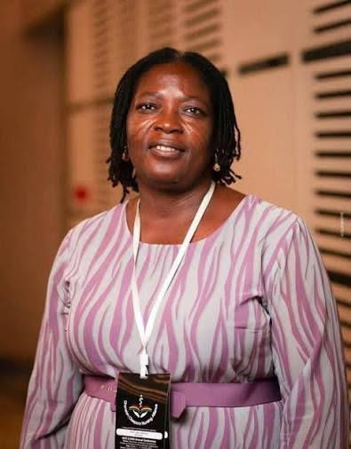
Patron, TEIN UDS
Prof. Vida Nyagre Yakong is a nurse-midwife, medical anthropologist and educator at the University for Development Studies. She holds a PhD in Interdisciplinary Studies (Medical Anthropology), a Master of Science in Nursing and a Bachelor of Science in Nursing, all from the University of British Columbia Okanagan in Canada.
At UDS she served as Head of Midwifery and later as Foundation Dean of the School of Nursing and Midwifery. In 2025 the University Council approved her promotion to Associate Professor of Medical Anthropology and Nursing.
Beyond the lecture hall, she is founder and CEO of Ghana Rural Opportunities for Women (GROW), a non-profit working on maternal and child health and on education and economic opportunity for rural women in her home district of Nabdam. She has also co-authored children’s storybooks and an alphabet book in Nabit.
“I decided to turn these challenges into a dream and a vision… to contribute back to my community.”
The 2026/27 leadership team of TEIN UDS. Replace the placeholder names and photos with the real ones.
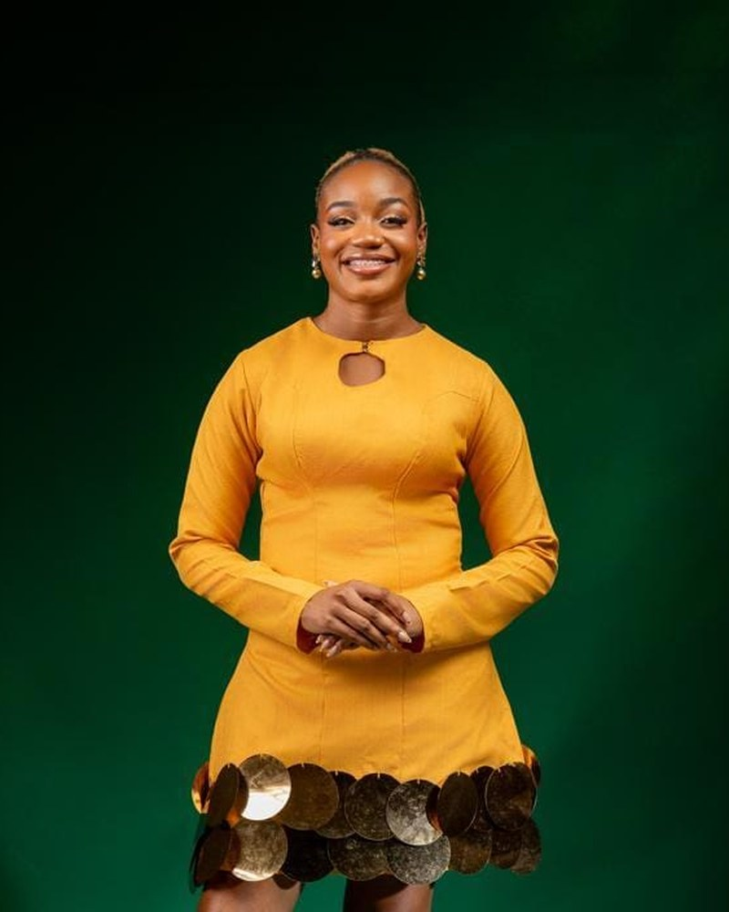
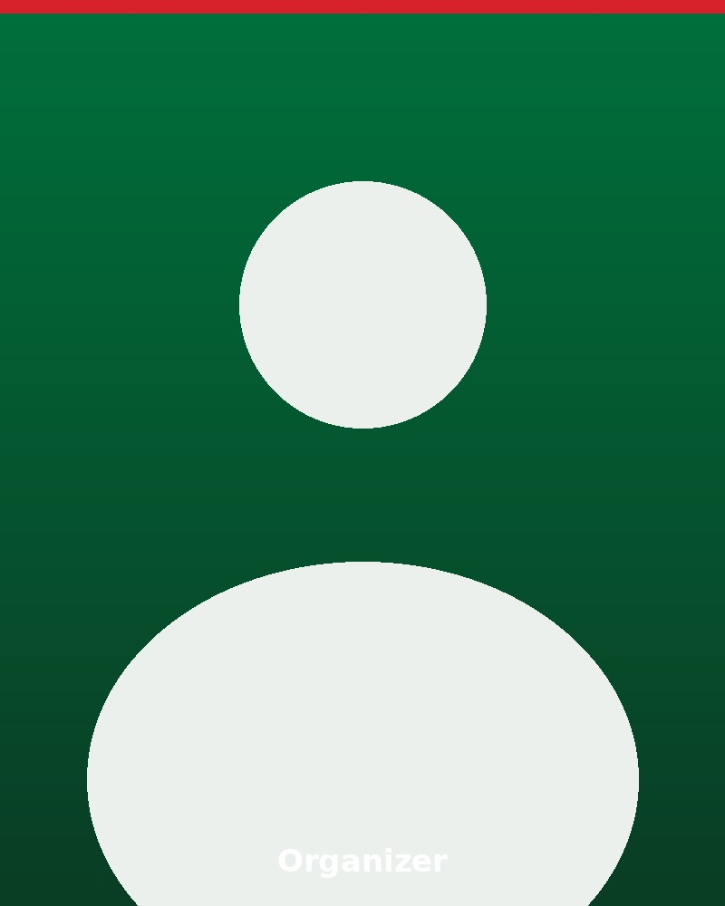
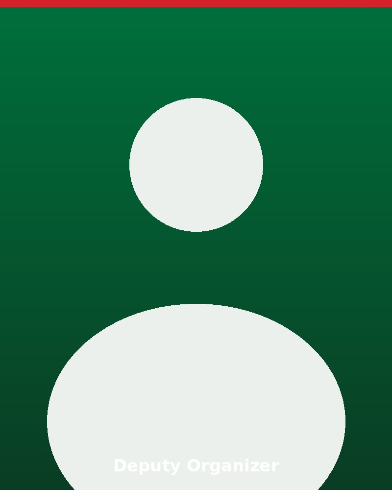
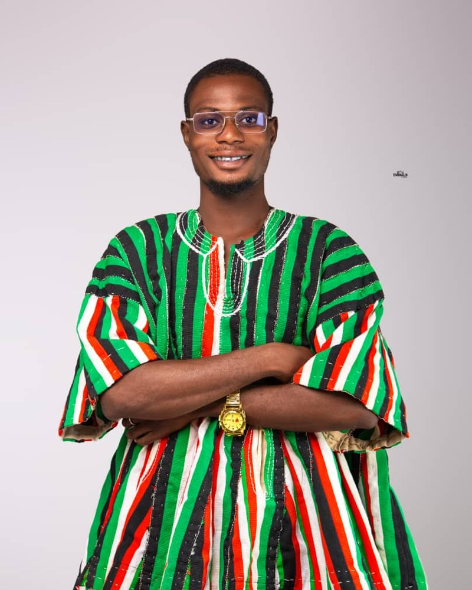
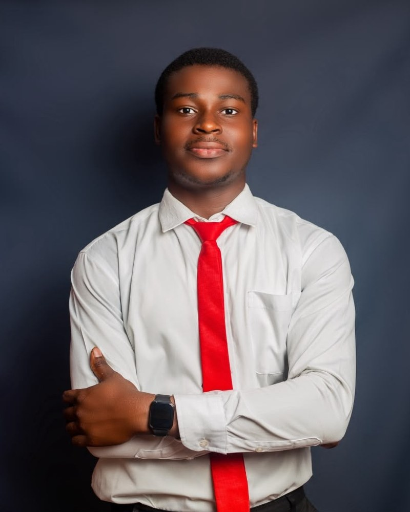
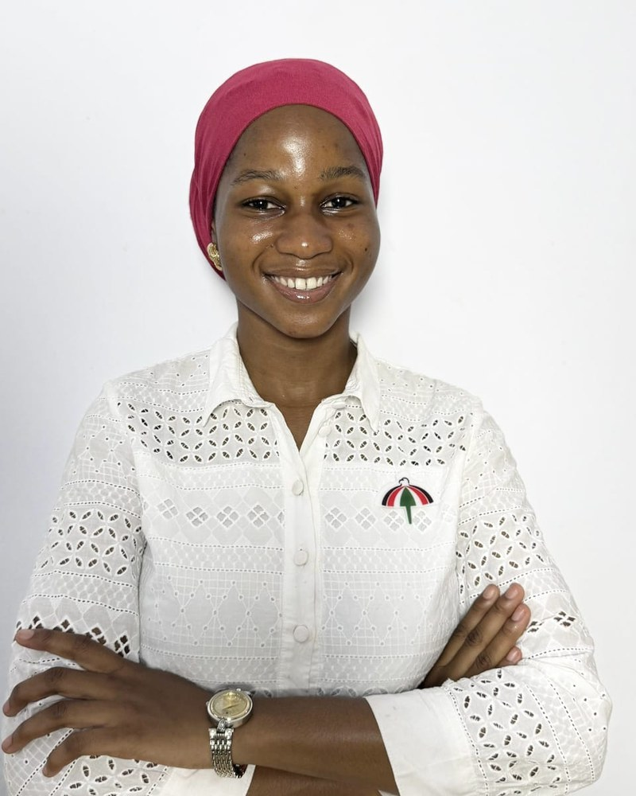
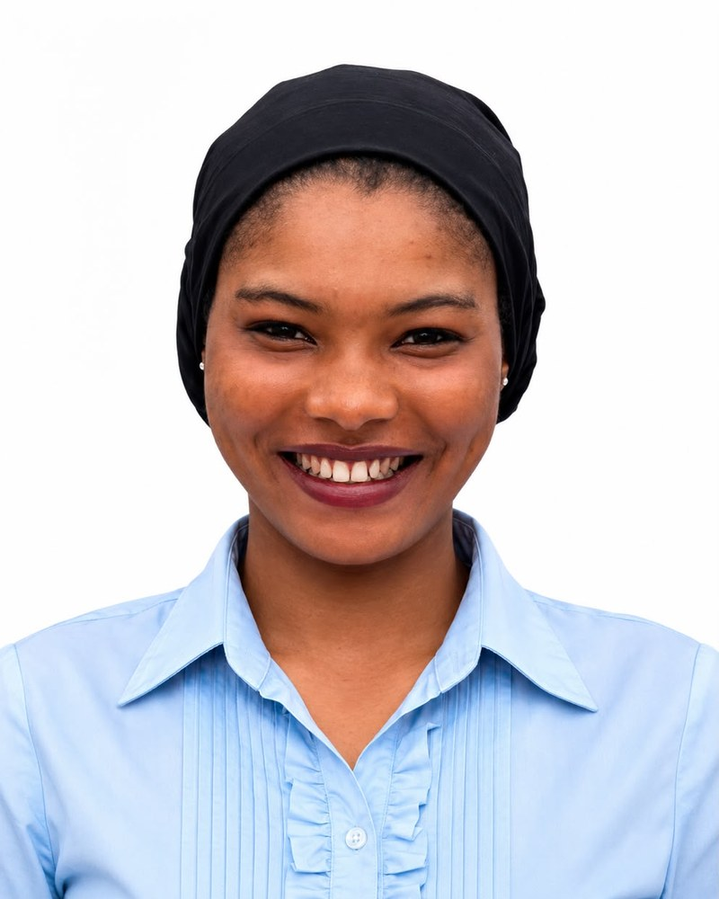
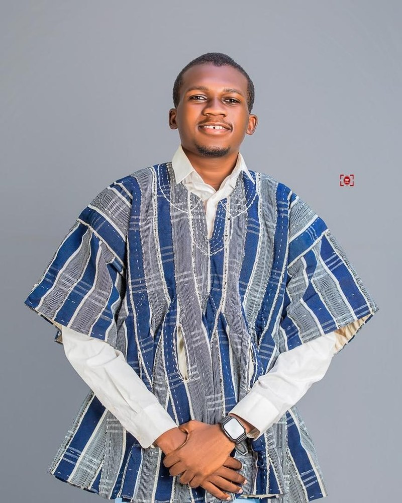
Those who carried the umbrella before us.
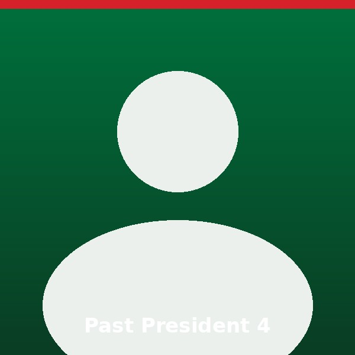
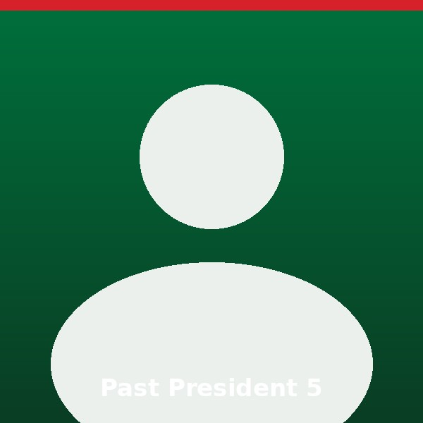
Sample entries. Edit the dates and details.
Welcome new students and register them as members. Venue to be confirmed.
Hands-on training for aspiring student leaders across campuses.
Health screening and clean-up exercise with the patron’s support.
Moments from our rallies, congresses and outreach.
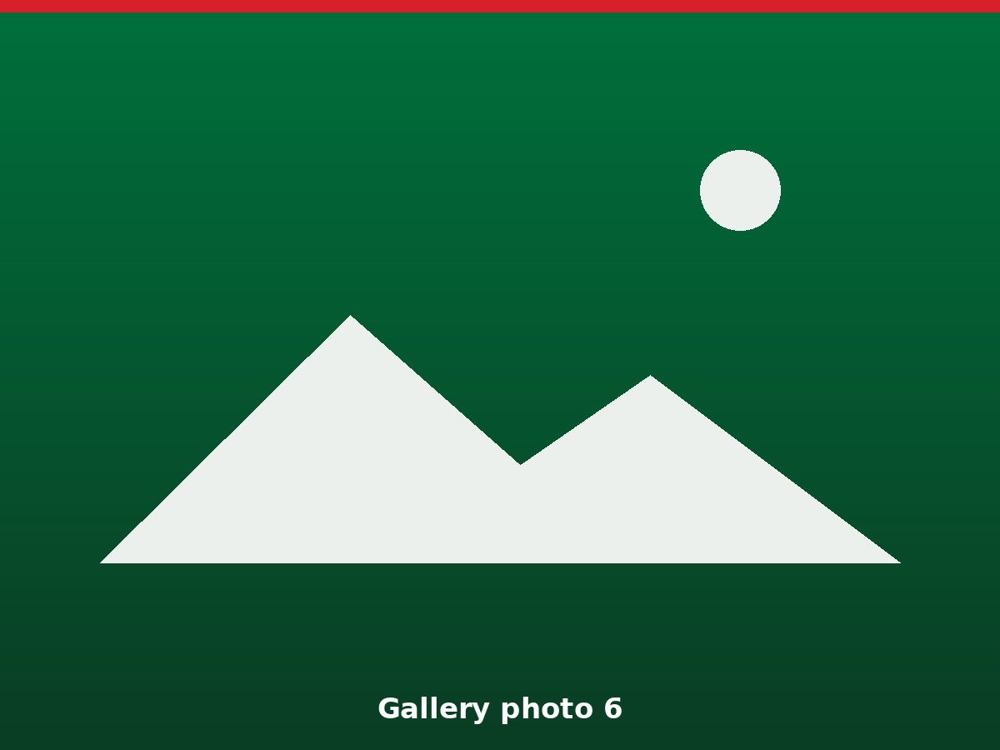
Membership registration is currently closed. In the meantime, volunteer for an event or reach out to your executives.
Join TEIN UDSWatch out for registration opening. Follow our official pages for the announcement.